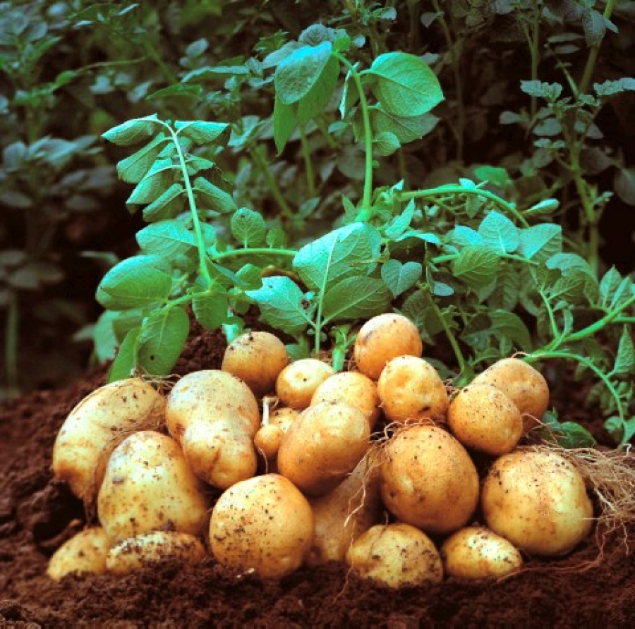

PROCESOS PRODUCTIVOS AGRICOLAS
PRODUCTO AGRICOLA ES LA DENOMINACION GENERICA DE CADA UNO DE LOS PRODUCTOS DE LA AGRICULTURA, LAS ACTIVIDADES HUMANAS QUE OBTINENEN MATERIAS PRIMAS DE ORIGEN VEGETAL O A TRAVES DEL CULTIVO.
CURSOS
CULTIVO DE PAPA


CULTIVO DE YUCA

CULTIVO DE TOMATE